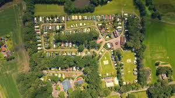
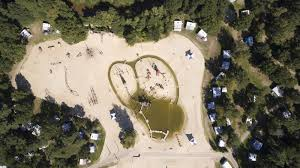
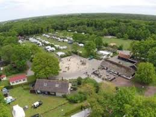

Camping De Vechtvallei - Hardenberg

Camping De Koeksebelt - Ommen

Camping De Kleine Wolf - Stegeren

Camping Beerze Bulten - Beerze

Camping De Roos - Beerze

Camping Si-Es-An - Balkbrug

Camping De Pallegarste - Mariënberg